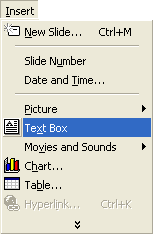
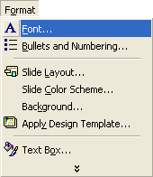
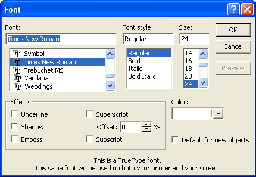
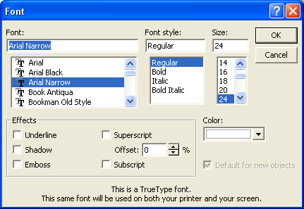
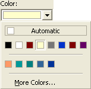
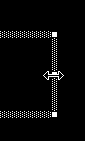
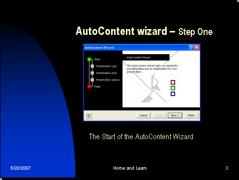

Free
powerpoint
Tutorials
|
Free
powerpoint
Tutorials
|
|
 home home |
Stay at Home and Learn | ||||
Add a Text Box to a PowerPoint slide |
|||||
|
Part 1, 2, 3, 4, 5, 6, 7, 8, 9, 10, 11
The next thing we'll do is add some text below the image we inserted onto the previous slide. In PowerPoint, you can't just start typing text where you please. It needs to go into a text box. You can then move the text box around the screen, and position your text where you want it. To add a new text box to your slide, click Insert from the menu bar at the top. From the Insert menu, click Text Box:  When you click on Text Box from the menu, you won't see anything happen. That's because text boxes need to be drawn on to the slide. So move your mouse pointer over to you slide, just below your image. The pointer will change shape to a slim white arrow: Hold down you left mouse button. Keep it held down and drag: When your text box is about the same width as your image, let go of the left mouse button. Your text box will then look like this in PowerPoint 2000: And this in PowerPoint 2003: The white line is the cursor, waiting for you to type some text. So go ahead and type the following into your text box: The Start of the AutoContent Wizard When you're done, your text box should like this:
The font itself is different from the one we used for the titles. The title font was Arial Narrow; this is Times New Roman. To change the properties of the font, first highlight all of your text. It should turn white: With the text highlighted, click Format > Font from the menu bar at the top of PowerPoint:  When you click on Font, you'll see the following dialogue box appear:  As you can see, the font is Times New Roman, the font style is Regular, and the Size is 24. Change the font to Arial Narrow, and keep the other two values the same:  You can also change the colour of the font. Click the black arrow on the Colour dropdown list:  Select the light yellow colour, which is the same as the Title colour we have. When you're done, click the OK button at the bottom of the dialogue box. The text box above looks a little too wide, though. You can resize the text box by holding your left mouse button down on one of the white square (or round) sizing handles. The mouse pointer will change shape:  Keep your left mouse button held down, and then drag to the left to make the text box narrower, or to the right to make it wider Let go of your left mouse button when you are happy with the size. (You can also make the text box higher. Use the same technique to drag the top-middle white square or circle upwards.) To move the text box to a new position, hold you mouse pointer over the shaded edges of the text box. Again, the mouse pointer will change shape: The image above shows the Move pointer. When you see this pointer, hold down your left mouse button. Keep it held down and drag your text box to a new location. But your Slide 3 should now look like this:  Have a look at your slideshow so far by pressing F5. See if slide 3 looks OK.
In the next part, you'll learn how to format the footer of a PowerPoint presentation. |
||||